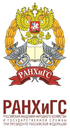
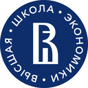

На главную
Исследования и образование

РАНХиГСДиссертация: «Использование искусственного интеллекта для совершенствования системы управления компанией».
Статьи в журналах ВАК 3
- Декабрь 2025Риски и ограничения применения искусственного интеллекта в управлении компаниейЭкономика и управление: проблемы, решения
- Сентябрь 2025Современные тенденции использования искусственного интеллекта в корпоративном управлении в период цифровой трансформацииФинансовый менеджмент
- Май 2025Характерные особенности применения искусственного интеллекта в менеджменте российских компанийЭкономика и управление: проблемы, решения
Доклады на международных конференциях 3
- Сентябрь 2026Организационная готовность российских компаний к внедрению искусственного интеллекта в систему менеджмента: барьеры и направления развитияXVI Международная научно-практическая конференция «Развитие современной науки и образования: актуальные вопросы, достижения и инновации», Пенза
- Сентябрь 2026Организационно-управленческие механизмы снижения рисков применения искусственного интеллекта в банковском менеджментеCX Международная научно-практическая конференция «Актуальные вопросы экономических наук и современного менеджмента», Новосибирск
- Март 2026Технологические требования к инфраструктуре компании при внедрении искусственного интеллектаCIV Международная научно-практическая конференция «Актуальные вопросы экономических наук и современного менеджмента», Новосибирск

НИУ ВШЭВыпускная работа: «Моделирование и оценка эффективности инвестиционных проектов в области цифровой трансформации компании».
НИУ МЭИ
Инженерная база, с которой начался путь: испытания и обслуживание электрооборудования, затем продажи технических решений.